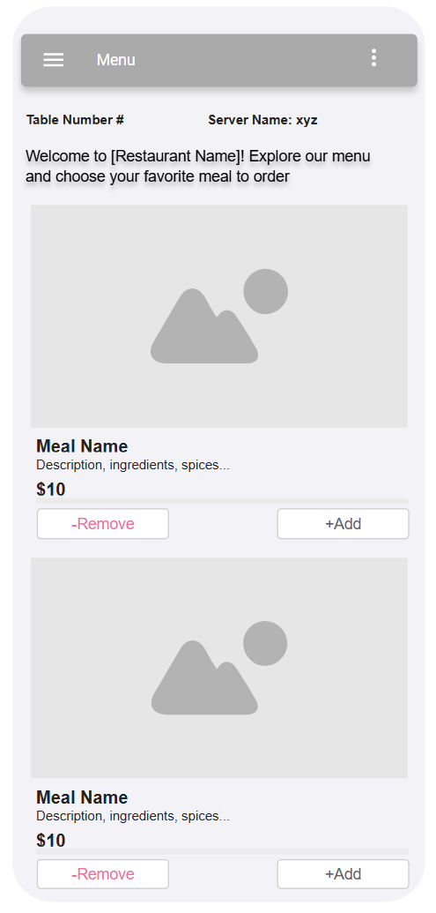

Site Name
Name: e-Restaurant
Reason: The name "e-Restaurant" reflects the integration of technology into traditional restaurant services. The "e" signifies electronic, highlighting the digital aspect of the platform, while "Restaurant" ensures relevance to the dining industry. This name is concise, easy to remember, and effectively communicates the focus on modernizing restaurant operations.
Optional Domain: e-Restaurant.online
Site Purpose
The purpose of the e-Restaurant platform is to revolutionize the dining experience by offering a digital menu, seamless order placement, and efficient payment solutions. By allowing customers to scan a QR code at their table, the platform enhances convenience, reduces wait times, and minimizes human error in order processing. This innovative solution aims to create a smoother, more efficient interaction between customers and restaurants, while also supporting operational efficiency.
Scenarios
For Customers:
- How do I access the menu at my table?
Simply scan the QR code located on your table with your smartphone. The menu will automatically load on your device.
- Can I customize my order (e.g., remove ingredients)?
Yes, the menu allows you to customize your order, including adding special instructions for your meal.
- How can I check my order status?
After placing your order, you can view its status in real time through the app, including whether it is being prepared or ready for serving.
- What payment options are available?
You can pay using a variety of methods, including credit/debit cards, mobile payment apps, or any digital wallets supported by the restaurant.
- Can I split the bill with others at my table?
Yes, the app includes an option to split the bill among diners, either equally or by individual items.
- How can I provide feedback about my dining experience?
After completing your payment, you’ll have the option to leave a review or provide feedback directly through the app.
For Restaurant Staff:
- How are orders received from customers?
Orders placed through the app are sent directly to the kitchen or a central management system, categorized by table number.
- Can I update the menu in real time?
Yes, staff can update menu items, prices, and availability instantly through the administrative panel of the app.
- How can I handle special requests or allergies?
Special requests and allergy information are included with customer orders and will be displayed clearly on the kitchen's interface.
- Does the system integrate with existing POS systems?
The e-Restaurant platform is designed to integrate seamlessly with most modern POS systems to ensure smooth operations.
- Can I track customer payments?
Yes, all payments are tracked in real time and synced with the restaurant’s financial records.
Color Scheme
Primary Color: Whitesmoke (#F5F5F5) - Used for headings and accents.
Secondary Color: Light Gray (#f4f4f4) - Used for backgrounds and neutral sections.
Typography
Font 1: Roboto (Headings)
Font 2: Open Sans (Body Text)
Wireframe
Menu Large View:
Menu Mobile View:
Backoffice Large View:
Backoffice Mobile View: